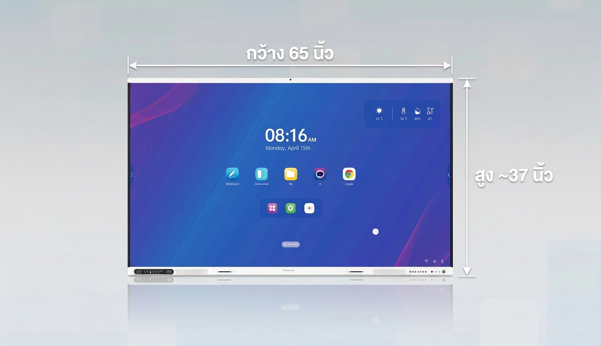

INTERACTIVE DISPLAY
Iwa AiBoard
จออัจฉริยะแบบ All-in-One สำหรับการเรียนการสอน ห้องประชุม และการนำเสนอ

SMART TEACHING · SMARTER LEARNING
Iwa AiBoard
ข้อมูลหน้านี้อ้างอิงจากเอกสารผลิตภัณฑ์ Iwa AiBoard โดยแยกเป็นรุ่นตามขนาดหน้าจอ
ข้อมูลสำคัญความละเอียด 3840 × 2160 · IR Touch · Dual OS · AI Camera · Multi-Screen Share · Wi-Fi 6
KEY FEATURES
จุดเด่นของสินค้า
4K Touch Screen, Anti-Glare + Toughened Glass, Dual OS, AI Camera, Multi-Screen Share และ Whiteboard Software
4K3840 × 2160
65″Diagonal display size
50KDisplay lifespan hours